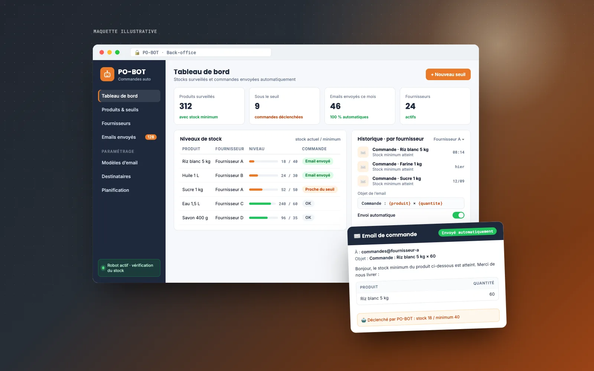
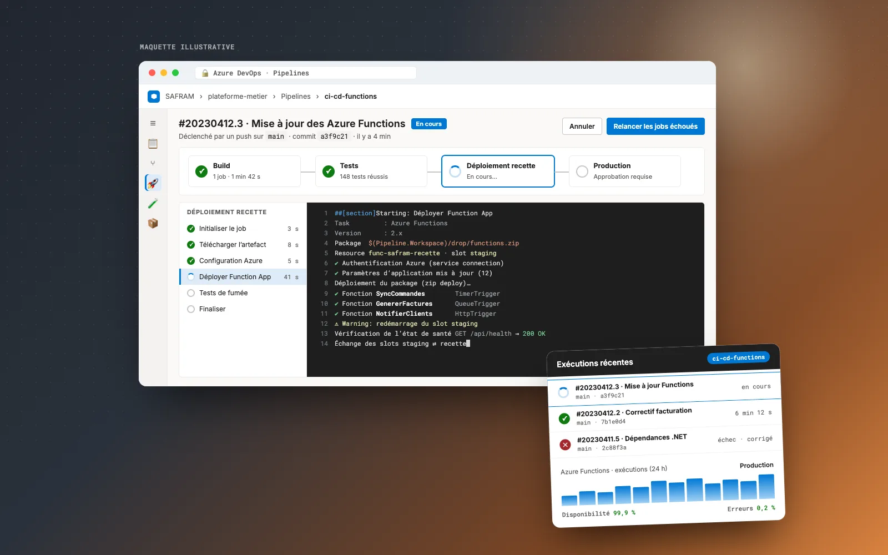
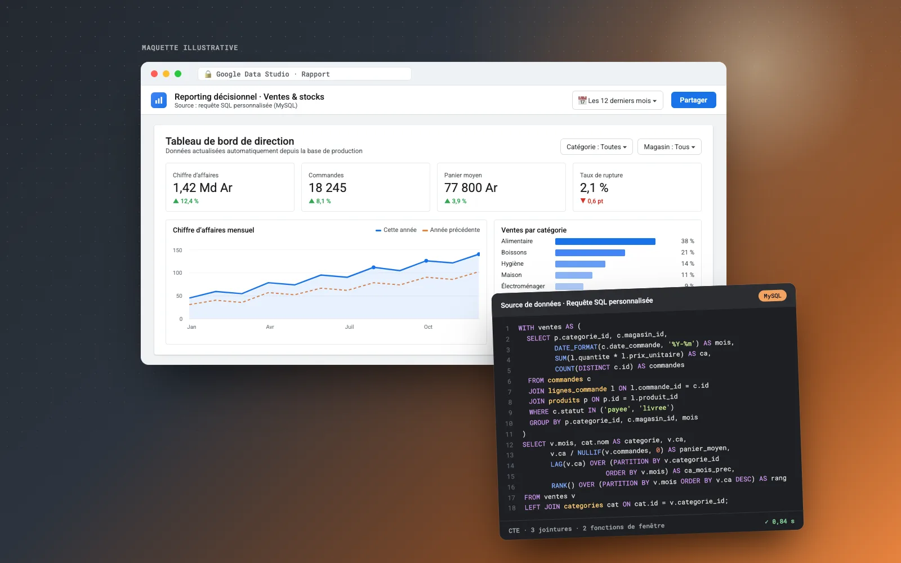
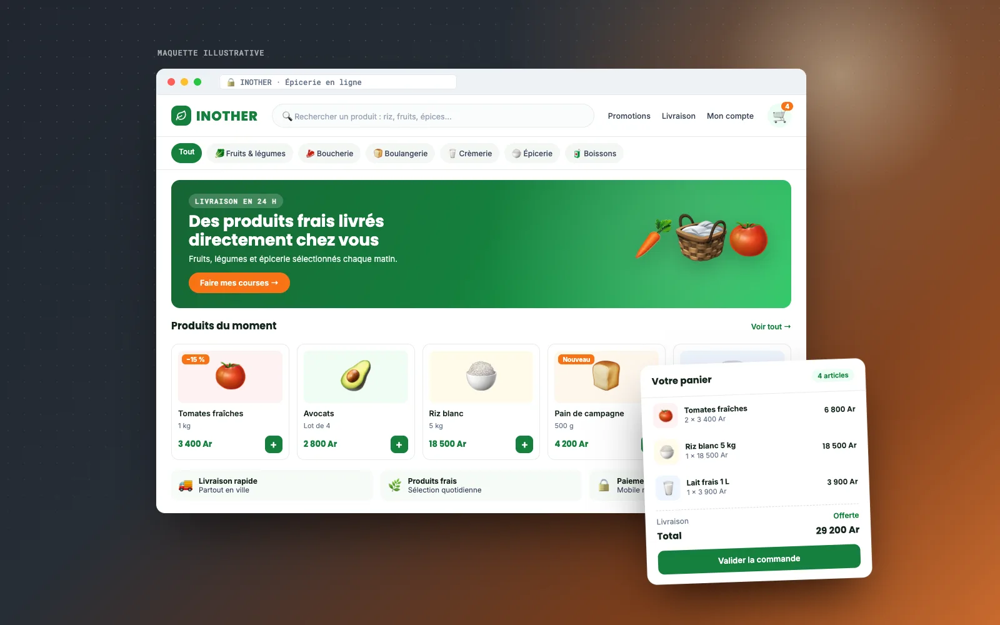

Applications métier sur mesure et sécurisées
Je transforme vos processus (ventes, stocks, facturation, RH) en une application web fiable, sécurisée et pensée pour vos équipes.
- Java
- Spring Boot
- JEE
- .NET
- API REST
- PostgreSQL
- Oracle
Disponible pour de nouvelles opportunités
je suis Full Stack Developer, Java / Spring Boot, React, DevOps & CI/CD
Ils m’ont fait confiance
Entreprises : je livre des applications qui font gagner du temps à vos équipes. Équipes tech : je rejoins votre stack Java / Spring Boot, React et CI/CD, en full remote.
Je transforme vos processus (ventes, stocks, facturation, RH) en une application web fiable, sécurisée et pensée pour vos équipes.
Des interfaces claires et rapides, sur ordinateur comme sur mobile, qui rassurent vos visiteurs et les transforment en clients.
Chaque amélioration est vérifiée puis mise en ligne automatiquement, sans interrompre votre activité. Votre application reste rapide et disponible.
Livraison continue · CI/CD
J’automatise tout le chemin entre une idée et sa mise en ligne. Vous voyez le résultat avant vos utilisateurs, et chaque nouveauté arrive vite, testée, sans interruption de service.
Vous décrivez le besoin, je le traduis en tâches claires.
Agile / Scrum · backlog · user stories
Je construis la fonctionnalité, étape par étape.
Java / Spring Boot · React · Git flow
Chaque modification est vérifiée avant d’aller plus loin.
Tests unitaires · GitHub Actions · GitLab CI
Vous essayez la nouveauté sur une version de démonstration.
Environnement de staging · revue
Mise en production en quelques minutes, sans coupure.
Docker · déploiement continu · rollback
Je crée des applications web qui font gagner du temps à vos équipes, et je m’occupe de tout, de l’idée à la mise en ligne.
Depuis plus de six ans, j’accompagne entreprises et organisations, à Madagascar comme en France, dans la création de leurs applications métier, plateformes e-commerce et outils internes. Je prends en charge tout le projet : comprendre votre besoin, concevoir la solution, la développer, la mettre en ligne et la faire évoluer. Vous avez un seul interlocuteur, en français ou en anglais, qui vous tient informé à chaque étape. Basé à Antananarivo (GMT+3), je travaille en full remote sur des horaires communs avec l’Europe, et je m’intègre rapidement à une stack Java / Spring Boot, React et CI/CD existante.
6+
années d’expérience
5+
projets & clients majeurs
15+
technologies maîtrisées
3
langues parlées : malgache, français, anglais
Back-offices institutionnels, e-commerce, automatisation et pipelines DevOps : des applications métier conçues, livrées et maintenues en production pour des clients locaux et internationaux.
Projet phare
Back-office OMAPI





Un premier appel pour cerner vos objectifs, vos utilisateurs et vos contraintes.
Je vous propose une solution, un planning et un budget détaillés, sans jargon.
Développement par étapes, avec des démos régulières pour valider chaque avancée.
Mise en ligne automatisée, prise en main par vos équipes, puis maintenance et évolutions.
Madagascar
Projets internes, projets pour des clients locaux et interventions à distance sur des projets internationaux en tant que consultant.
Missions notables
Madagascar · août 2021 – avril 2022
Antananarivo · 3 mois
Conception, développement et déploiement d’une plateforme e-commerce de vente de produits alimentaires.
2026 – 2027en cours
ESTIA — École Supérieure des Technologies Industrielles Avancées · France
2025 – 2026
IT University · Madagascar
2016 – 2019
IT University · Madagascar
Architecture multi-tiers, programmation avancée & frameworks, programmation système, développement mobile, développement web avancé, conception orientée objet.
2016
Lycée privé « La Flèche » · Madagascar
Distinction
2026 – 2027 · en cours
ESTIA — École Supérieure des Technologies Industrielles Avancées · France
Master of Science labellisé CGE (Conférence des Grandes Écoles) en Big Data et intelligence artificielle : infrastructures de données massives, préparation des données, Machine & Deep Learning, puis déploiement de solutions IA (API, MLOps, CI/CD, cloud).
Travailler en full remote avec un développeur Full Stack basé à Madagascar : l’essentiel en quelques réponses.
Oui. Je suis basé à Antananarivo et je travaille en full remote pour des entreprises à Madagascar, en France et à l’international. J’ai par exemple automatisé à distance les pipelines CI/CD et les processus Azure de SAFRAM, une entreprise française.
Vous travaillez avec un développeur Full Stack senior francophone et anglophone, sur un fuseau horaire proche de l’Europe, qui a plus de six ans d’expérience sur des applications en production (Java, React, CI/CD) pour des clients à Madagascar et en France.
Madagascar est à GMT+3, sans changement d’heure : une heure de plus qu’à Paris en été, deux heures en hiver. Nos journées de travail se recouvrent presque entièrement, ce qui facilite les réunions et les échanges en direct.
Côté serveur : Java / Spring Boot, mais aussi PHP / Symfony et .NET. Côté interface : React, TypeScript et JavaScript. Pour les données : MySQL, PostgreSQL et Oracle. Pour la mise en ligne : Docker et la CI/CD (GitHub Actions, GitLab CI, Jenkins, Azure DevOps).
Un premier appel pour comprendre votre besoin, puis une proposition claire : solution, planning et budget. Je développe par étapes, avec des démos régulières sur une version de test, et chaque nouveauté est mise en ligne automatiquement, sans coupure. Vous avez un seul interlocuteur du début à la fin.
Les deux : je réalise des projets complets et des missions freelance, et je peux aussi rejoindre votre équipe tech sur un poste en full remote. Décrivez-moi votre besoin, je vous réponds rapidement.
En français ou en anglais, à l’écrit comme à l’oral. Le malgache est ma langue maternelle.
Contact
Un projet à lancer, une application à faire évoluer ou un poste à pourvoir ? Écrivez-moi, je vous réponds rapidement.
↑↓ naviguer · ↵ valider · esc fermer